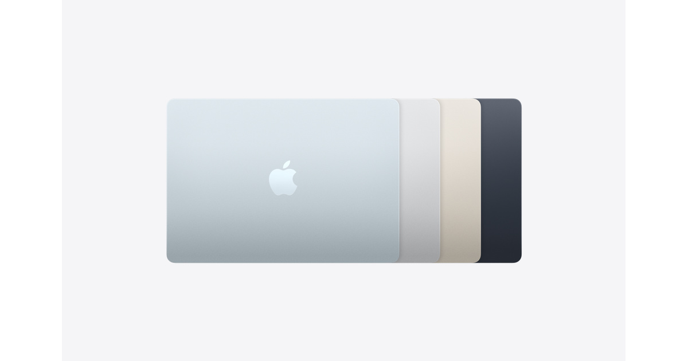
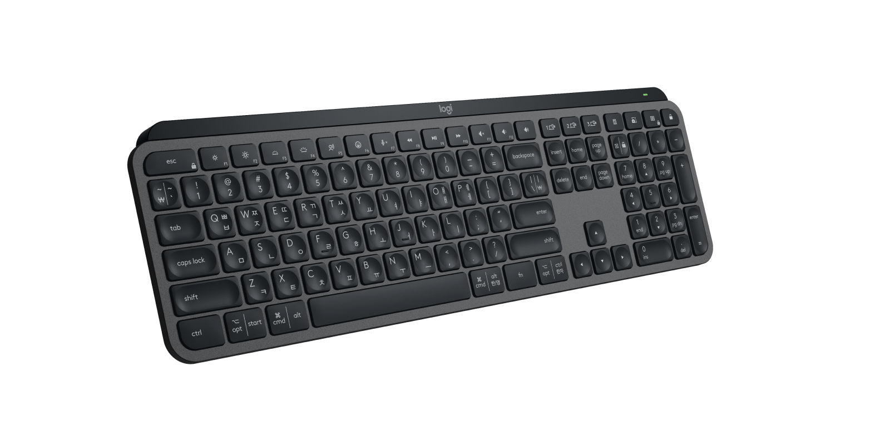
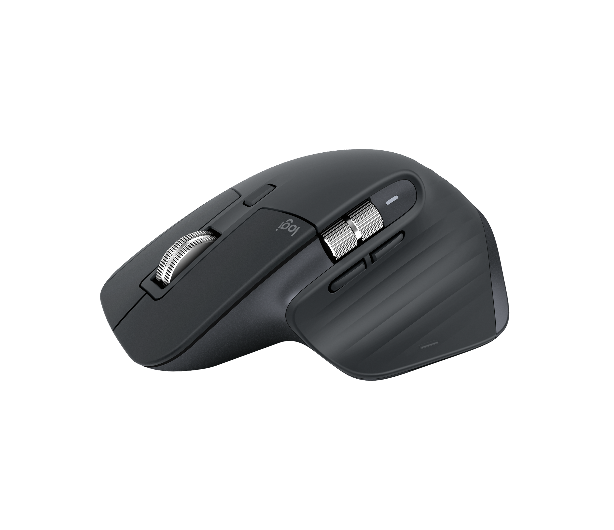
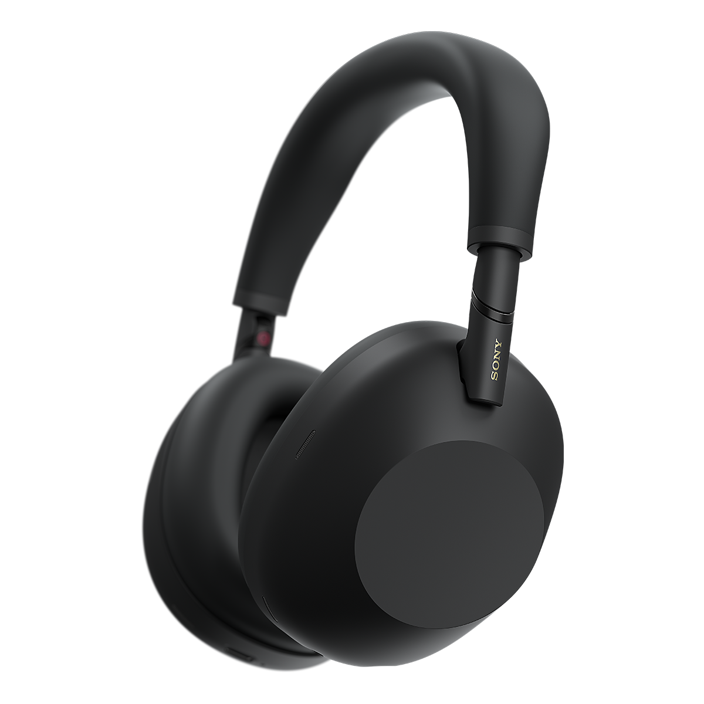
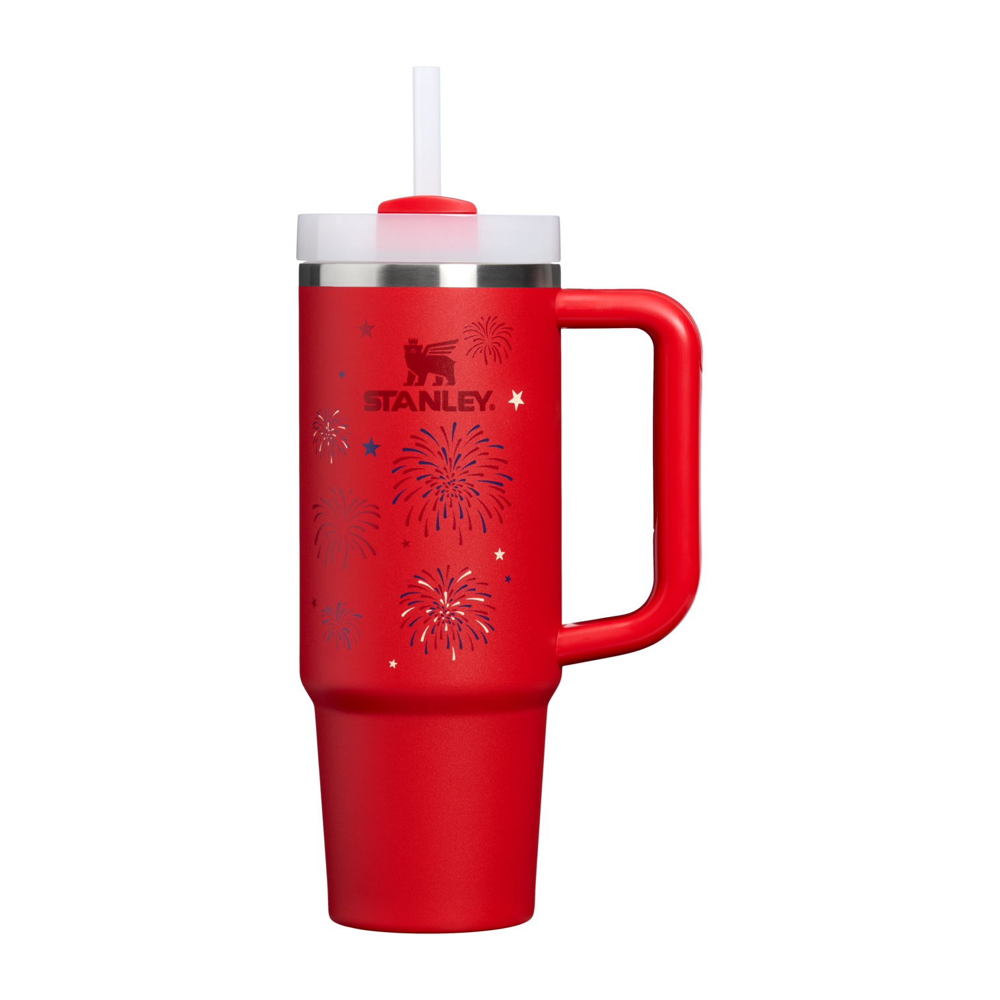
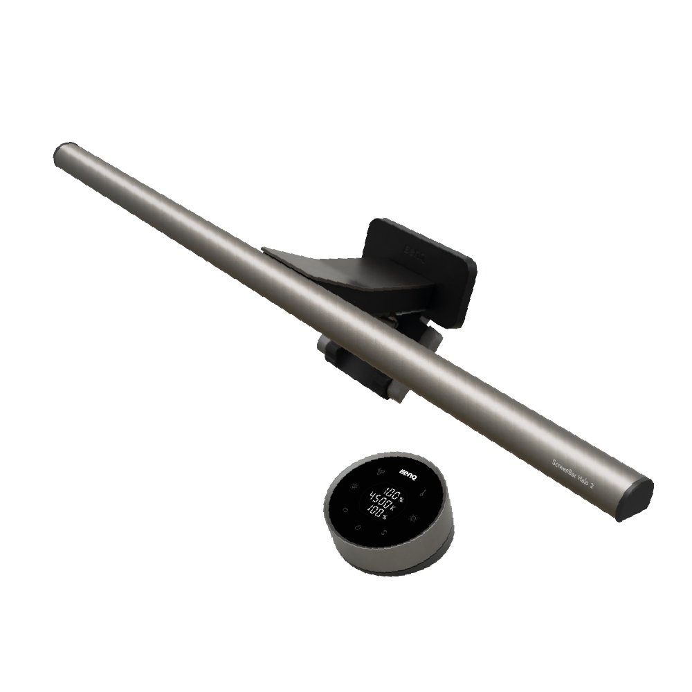

APPLE
13형 MacBook Air M5
가볍게 들고 다니면서 코딩과 콘텐츠 작업을 이어가기 좋은 최신 Air.
- 칩M5 · 10코어 CPU
- 기본 구성16GB · 512GB
- 색상4가지
DESK TO DAILY · 6 ESSENTIALS
집중이 필요한 작업 시간부터 잠깐의 외출과 휴식까지, 매일 자연스럽게 손이 가는 제품을 한곳에 모았습니다.
선정 제품 보기EVERYDAY FAVORITES
WORK · FOCUS · LIFE

APPLE
가볍게 들고 다니면서 코딩과 콘텐츠 작업을 이어가기 좋은 최신 Air.

LOGITECH
손이 가까워지면 켜지는 백라이트와 안정적인 타건감을 갖춘 풀사이즈 키보드.

LOGITECH
정밀 스크롤과 조용한 클릭으로 긴 문서 작업과 편집 흐름을 끊지 않는 마우스.

SONY
적응형 노이즈 캔슬링과 긴 배터리로 이동과 집중 작업을 함께 책임지는 헤드폰.

STANLEY 1913
손잡이와 빨대, 차량 컵홀더 호환까지 일상적인 사용성을 촘촘히 챙긴 텀블러.

BENQ
책상 면적을 차지하지 않고 앞·뒤 조명을 따로 조절할 수 있는 모니터 라이트.
검색어를 지우거나 다른 필터를 선택해 보세요.